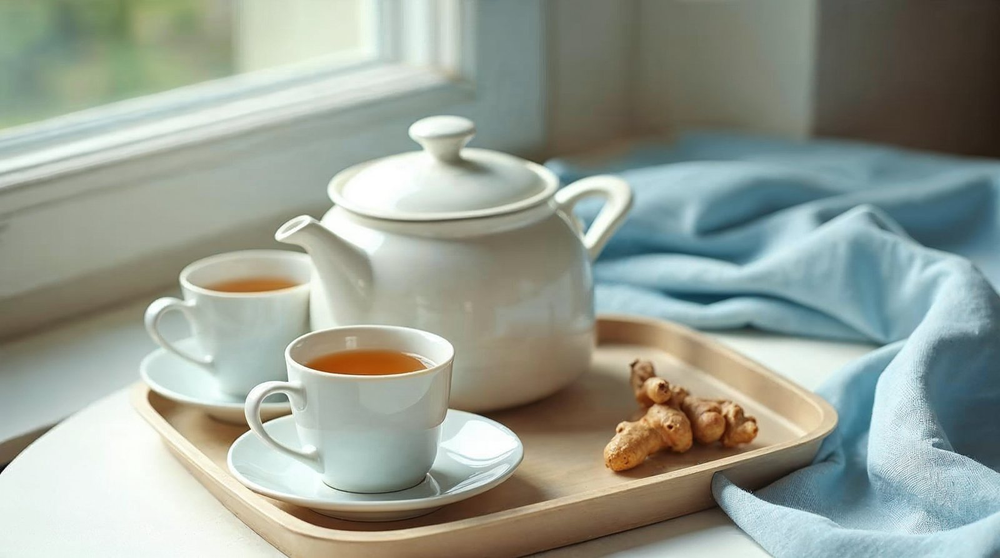
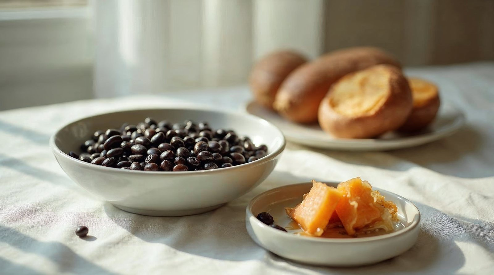

이종호 한의사 감수좋은꿈참사랑한의원 대표원장 (한의사 면허번호 19769)발행 2026-11-26 · 수정 2026-11-27
이 글의 차례
생리 둘째 날 아침, 화장실에서 일어서다 멈칫해요. 변기 안에 검붉은 덩어리가 툭 떨어져 있습니다. 생리대를 갈 때마다 젤리처럼 뭉친 것이 묻어 나오고요. '이렇게 큰 게 나와도 괜찮은 걸까. 안에서 뭔가 잘못된 건 아닐까.' 차마 누구에게 묻지도 못하고 혼자 검색창만 들여다보게 되시죠.
진료실에서 생리 얘기를 나누다 보면 덩어리 얘기는 늘 마지막에, 조금 머뭇거리며 나와요. 말하기 쑥스럽기도 하고, 원래 다들 그런 줄 알았다고 하시는 분도 많아요. 그런데 막상 여쭤 보면 덩어리 때문에 꽤 오래 마음을 졸여 오신 경우가 적지 않거든요.
먼저 말씀드리면, 생리혈에 작은 덩어리가 섞여 나오는 건 흔한 일이에요. 원래 그래요. 특히 양이 많은 날이나 오래 누워 있다가 일어났을 때는 더 잘 보여요. 다만 덩어리가 크고 자주 나오거나, 양이 많아지고 통증이 심해졌다면 그 뒤에 무엇이 있는지 확인해 볼 이유가 생기는 거예요.
그러니까 사실은 '덩어리가 있다'는 것과 '덩어리가 많아졌다'는 건 다른 얘기예요. 그래서 저는 있다, 없다보다 크기와 횟수, 그리고 함께 오는 변화를 여쭤요. 같은 덩어리라도 양과 통증, 주기의 흐름에 따라 살펴볼 방향이 달라지거든요.
생리혈 덩어리는 무엇인가요?
생리혈은 자궁 안쪽을 덮고 있던 내막이 떨어져 나오면서 피와 함께 몸 밖으로 나오는 것입니다. 우리 몸에는 상처가 나면 피를 굳혀 멈추게 하는 힘이 있는데, 자궁 안에서는 생리혈이 굳지 않도록 녹여 주는 물질이 함께 나옵니다. 그래서 보통 생리혈은 액체 상태로 흘러나옵니다.
그런데 피가 한꺼번에 많이 나오면 녹이는 속도가 따라가지 못해 일부가 뭉칩니다. 또 질 안에 피가 잠시 고여 있다가 한 번에 나와도 덩어리처럼 보입니다. 아침에 일어나 처음 화장실에 갔을 때 덩어리가 잘 보이는 것도 밤새 누워 있는 동안 피가 고여 있었기 때문입니다.
덩어리의 색은 검붉거나 짙은 밤색인 경우가 많고, 만지면 젤리처럼 물렁합니다. 떨어져 나온 내막 조각이 섞여 조금 질긴 느낌이 들기도 합니다. 작은 덩어리가 양이 많은 날에만 보였다가 사라진다면 대개 이런 흐름으로 설명됩니다.
왜 덩어리가 많아질까요
덩어리가 많아지는 가장 흔한 이유는 생리 양 자체가 늘어난 것입니다. 양이 늘어나는 데에는 여러 까닭이 있어서, 덩어리가 많아졌다면 양이 왜 늘었는지를 함께 살펴보게 됩니다.
- 자궁근종처럼 자궁에 혹이 생겨 내막의 넓이가 늘어난 경우
- 자궁선근증처럼 자궁 벽이 두꺼워진 경우
- 자궁내막 용종이나 내막이 두꺼워진 경우
- 40대 무렵처럼 호르몬 리듬이 바뀌는 시기
- 출산 뒤 자궁이 다시 자리를 잡는 시기
- 혈액을 묽게 하는 약을 드시거나 피가 잘 멎지 않는 체질인 경우
이 가운데 근종과 선근증은 진료실에서 자주 듣는 이름입니다. 크기와 자리에 따라 아무 불편이 없는 분도 있고, 양이 많아지고 덩어리와 통증이 함께 늘어나는 분도 있습니다. 어떤 상태인지는 산부인과 초음파로 확인하시는 것이 정확합니다.
한의학에서는 덩어리가 많고 검붉으며 아랫배를 누르면 아프고 찌르는 듯한 통증이 있는 모습을 어혈이라는 말로 설명하곤 합니다. 피의 흐름이 매끄럽지 못하고 한 자리에 머문다는 뜻입니다. 아랫배가 차고 따뜻하게 하면 편해지는 분은 찬 기운이 함께 얽혀 있다고 보기도 합니다.

어느 정도면 살펴봐야 할까요?
크기와 횟수를 기준으로 생각해 보시면 쉽습니다. 손톱만 한 작은 덩어리가 양 많은 날 몇 번 보이는 정도라면 흔한 범위에 가깝습니다. 반면 오백 원짜리 동전보다 큰 덩어리가 생리 때마다 여러 번 나온다면 확인을 받아 보시길 권합니다.
함께 오는 변화도 중요합니다. 생리대를 한두 시간마다 갈아야 하는 날이 이어지거나, 밤에 깨서 갈아야 하거나, 생리 기간이 예전보다 길어졌다면 양이 늘었다는 신호입니다. 생리통이 해마다 심해지는 것도 함께 말씀해 주세요.
덩어리와 많은 양이 몇 달 이어지면 철분이 부족해지기 쉽습니다. 쉽게 지치고 계단에서 숨이 차거나, 얼굴이 창백하다는 말을 듣는다면 혈액 검사를 받아 보시는 것이 좋습니다. 덩어리 자체보다 이런 변화가 더 중요한 단서가 될 때가 많습니다.
덩어리와 함께 오는 통증
덩어리가 나올 때 아랫배가 쥐어짜듯 아프다고 하시는 분이 많습니다. 자궁은 근육으로 된 주머니여서, 덩어리를 밀어내기 위해 더 세게 수축합니다. 덩어리가 자궁 입구를 지나는 동안 통증이 몰려왔다가, 나오고 나면 조금 편해지는 느낌을 받기도 합니다.
생리통이 생리 첫날뿐 아니라 생리 전부터 시작되거나, 생리가 끝나도 아랫배가 묵직하게 남는다면 자궁내막증이나 선근증 같은 상태가 함께 있는지 살펴볼 필요가 있습니다. 진통제를 먹어도 듣지 않는 날이 늘었다면 더 그렇습니다.
허리나 엉덩이까지 뻐근하게 내려가는 통증, 배변할 때 아랫배가 당기는 느낌도 함께 여쭙니다. 이런 이야기들이 모이면 덩어리가 어디에서, 왜 많아졌는지를 좁혀 가는 데 도움이 됩니다.
통증이 심한 날에는 아랫배에 따뜻한 찜질을 대고 옆으로 누워 무릎을 살짝 당기는 자세가 편하다는 분이 많습니다. 찜질은 너무 뜨겁지 않게, 피부가 붉어지지 않을 정도로만 해 주세요.
비슷해 보이지만 다른 경우
생리가 아닌 때에 덩어리 섞인 피가 나온다면 생리혈 덩어리와는 따로 봐야 합니다. 생리 사이 출혈이나 폐경 뒤의 출혈은 원인을 확인하는 것이 먼저입니다.
임신 가능성이 있는 상태에서 평소와 다른 덩어리나 조직 같은 것이 나왔다면 생리가 아닐 수 있습니다. 이런 경우에는 진료 전에 알려 주시고 산부인과에서 먼저 확인을 받으시도록 안내합니다.
끈적한 투명한 점액이나 생리 끝 무렵의 갈색 피, 작은 실 같은 조각은 덩어리와 다릅니다. 무엇이 나왔는지 설명하기 어려우시면 크기와 색, 나온 날을 메모해 두시는 것만으로 충분합니다.

나이와 시기에 따라 달라지는 덩어리
생리를 시작한 지 얼마 안 된 시기에는 주기와 양이 아직 고르지 않아, 어떤 달은 양이 많고 덩어리가 섞여 나오기도 합니다. 이 시기에는 덩어리 자체보다 양이 지나치게 많아 학교생활이 힘든지, 쉽게 지치는지를 함께 봅니다.
출산 뒤 생리가 다시 시작되면 예전보다 양이 많고 덩어리가 잦아졌다고 느끼시는 분이 있습니다. 자궁이 커졌다가 제자리로 돌아오는 과정에서 몇 달 동안 그럴 수 있지만, 시간이 지나도 이어진다면 확인을 받아 보세요.
40대 무렵에는 배란이 들쭉날쭉해지면서 내막이 두껍게 쌓였다가 한꺼번에 떨어지는 달이 생깁니다. 이런 달에는 양이 많고 덩어리도 커지기 쉽습니다. 근종이 이 시기에 커지는 경우도 있어서, 정기 검진 때 초음파로 함께 확인하시길 권합니다.
먼저 이렇게 여쭙니다
처음 오시면 저는 대략 이런 순서로 여쭙니다. 미리 생각해 오시면 이야기가 훨씬 수월해집니다.
- 덩어리는 대략 어느 정도 크기이고, 생리 며칠째에 주로 나오나요?
- 양이 가장 많은 날 생리대를 몇 번 바꾸고, 밤에 깨서 갈아야 하나요?
- 생리는 며칠 동안 하고, 예전과 비교해 기간이나 양이 달라졌나요?
- 생리통은 언제 시작해 언제 끝나고, 진통제는 얼마나 드시나요?
- 쉽게 지치거나 어지럽고, 계단에서 숨이 차지는 않나요?
- 산부인과에서 근종이나 선근증 이야기를 들은 적이 있나요?
모든 질문에 정확히 답하지 못하셔도 괜찮습니다. 생리대 바꾸는 횟수와 덩어리가 나온 날만 적어 오셔도 이야기의 절반은 시작된 셈입니다.
혈액을 묽게 하는 약이나 다른 약, 영양제를 드시는지도 여쭙니다. 약에 따라 생리 양이 달라질 수 있어서, 드시는 약을 모두 알려 주시는 것이 진료 방향을 정하는 데 큰 도움이 됩니다.
일상에서 먼저 해 볼 수 있는 것
덩어리를 당장 없앨 수는 없지만, 생리 기간을 조금 덜 힘들게 보내는 방법은 있습니다. 하나를 골라 이번 생리부터 해 보세요.
- 아랫배와 허리를 차게 두지 않고, 얇은 겉옷이나 담요로 감싸기
- 생리 기간에는 찬 음료와 찬 음식을 줄이고 따뜻한 물을 조금씩 자주 마시기
- 오래 앉아 있었다면 한 시간에 한 번은 일어나 천천히 걷기
- 양 많은 날에는 무리한 운동이나 무거운 짐 들기를 줄이기
- 붉은 살코기, 조개류, 달걀, 짙은 녹색 채소처럼 철분이 든 음식을 챙기기
- 잠드는 시각을 일정하게 맞추고 생리 기간에는 조금 일찍 눕기
오래 앉아 있으면 골반 쪽 흐름이 더뎌져 아랫배가 더 묵직하게 느껴질 수 있습니다. 가볍게 걷거나 골반을 천천히 돌리는 움직임은 몸을 한결 풀어 줍니다. 다만 통증이 심한 날에는 쉬는 것이 먼저입니다.
아침에 일어나 처음 화장실에 갈 때 덩어리가 많이 나온다면 놀라지 않으셔도 됩니다. 밤새 고여 있던 피가 한 번에 나오는 것이니, 그때의 덩어리보다는 낮 동안의 양과 크기를 기준으로 기록해 보세요.
진통제는 통증이 시작될 무렵 정해진 용량대로 드시는 것이 도움이 될 수 있습니다. 위가 약하신 분은 식후에 드시고, 진통제를 드시는 날이 해마다 늘어난다면 그 흐름도 함께 말씀해 주세요.
생리대만으로 양을 가늠하기 어렵다면 생리컵처럼 양을 눈으로 볼 수 있는 방법을 쓰는 분도 계십니다. 어떤 방법이든 편한 것을 쓰시면 되고, 중요한 것은 생리 때마다 같은 기준으로 기록하는 것입니다. 기준이 같아야 달마다의 변화가 보입니다.
한의원에서 함께 살필 수 있는 경우
- 산부인과 확인을 받았고 지켜보자는 이야기를 들었지만 덩어리와 생리통이 힘든 경우
- 생리 때마다 아랫배가 차고 묵직하며 따뜻하게 하면 편해지는 경우
- 덩어리가 나올 때 찌르는 듯한 통증이 있고 아랫배를 누르면 아픈 경우
- 생리 양이 많아진 뒤로 쉽게 지치고 손발이 찬 경우
- 생리 전후로 허리와 골반 주변이 뻐근하게 굳는 경우
좋은꿈참사랑한의원에 오시면 모든 분의 맥을 먼저 짚고, 혀와 배를 살피며, 아랫배의 온기와 누를 때의 통증, 잠과 소화, 대소변을 여쭙습니다. 허리와 골반 주변이 굳어 있다면 직접 만져 보며 불편한 자리를 확인합니다.
진찰한 내용을 바탕으로 생활에서 바꿔 볼 것 하나와 함께 침, 온열 관리, 한약 상담 가운데 지금 상태에 맞는 것을 정합니다. 한약을 상의할 때는 드시는 약을 모두 확인하고 신중하게 정합니다. 병원에서 처방받은 약은 상의 없이 멈추지 않습니다.
한의원 진료는 산부인과 진료를 대신하는 것이 아니라 나란히 가는 것입니다. 근종이나 선근증이 있다면 산부인과에서 크기와 변화를 정기적으로 확인하시고, 한의원에서는 그 사이의 통증과 몸의 온기, 피로를 함께 살핀다고 생각해 주시면 됩니다.
이렇게 기록해 오시면 상담이 쉬워집니다
생리 양과 덩어리는 기억만으로는 가늠하기 어렵습니다. 두세 번의 생리 동안 간단히 적어 보세요.
- 생리 시작일과 끝난 날
- 날마다 생리대를 바꾼 횟수와 밤에 깬 횟수
- 덩어리가 나온 날과 대략의 크기
- 생리통이 시작되고 끝난 때, 진통제를 먹은 횟수
- 피로, 어지럼, 숨참처럼 함께 온 불편
빠진 날이 있어도 괜찮습니다. 기록을 나란히 놓고 보면 양과 덩어리가 어떤 흐름으로 변하는지 보이기 시작하고, 그것이 다음 걸음을 정하는 실마리가 됩니다.
덩어리를 말할 수 있게 되는 것부터
생리혈 덩어리는 말하기 쑥스러워서 오래 혼자 품고 계시는 경우가 많아요. 그런데 크기와 양을 담담하게 얘기할 수 있게 되면, 걱정할 것과 걱정하지 않아도 될 것이 훨씬 선명하게 나뉘는 거예요.
확인할 검사는 산부인과와 함께, 몸의 흐름을 살피는 건 제가 맡을게요. 대신 하나만 부탁드려요. 이번 생리에는 생리대 바꾸는 횟수와 덩어리가 나온 날만 적어 주세요. 딴 건 평소대로 지내셔도 돼요.
다음에 오시면 그 기록부터 함께 펼쳐 볼게요. 쑥스러운 얘기라도 괜찮아요. 궁금한 건 그냥 편하게 물어보세요.
이런 증상은 먼저 확인이 필요합니다
- 피 양이 갑자기 늘어 한두 시간마다 생리대가 흠뻑 젖고 어지러워 쓰러질 것 같은 경우
- 임신 가능성이 있는데 덩어리나 조직 같은 것이 나오면서 아랫배가 심하게 아픈 경우
이런 신호가 있으면 한의원보다 가까운 병원이나 응급실을 먼저 찾으세요.
함께 읽으면 좋은 글
- 생리 양이 너무 많을 때(월경과다)는 무엇을 확인하고 어떻게 살피나요?
- 생리통이 심할 때 한의원에서는 무엇을 먼저 묻고, 언제 병원 검사가 필요한가요?
- 자궁내막증이 있다고 들었을 때, 생리통과 골반 통증은 어떻게 함께 살피나요?
- 생리 때마다 아랫배가 차고 묵직할 때는 무엇을 먼저 살피나요?
- 빈혈이 있다는 말을 듣고 어지럽고 쉽게 지칠 때, 철분과 생활은 어떻게 살피나요?
여쭙는 것
- 덩어리는 대략 어느 정도 크기이고, 생리 며칠째에 주로 나오나요?
- 양이 가장 많은 날 생리대를 몇 번 바꾸고, 밤에 깨서 갈아야 하나요?
- 생리는 며칠 동안 하고, 예전과 비교해 기간이나 양이 달라졌나요?
생활에서 해 볼 것
- 아랫배와 허리를 차게 두지 않고, 얇은 겉옷이나 담요로 감싸기
- 생리 기간에는 찬 음료와 찬 음식을 줄이고 따뜻한 물을 조금씩 자주 마시기
- 오래 앉아 있었다면 한 시간에 한 번은 일어나 천천히 걷기
한의원에서 함께 살필 것
- 산부인과 확인을 받았고 지켜보자는 이야기를 들었지만 덩어리와 생리통이 힘든 경우
- 생리 때마다 아랫배가 차고 묵직하며 따뜻하게 하면 편해지는 경우
- 덩어리가 나올 때 찌르는 듯한 통증이 있고 아랫배를 누르면 아픈 경우
먼저 확인이 필요한 신호
- 피 양이 갑자기 늘어 한두 시간마다 생리대가 흠뻑 젖고 어지러워 쓰러질 것 같은 경우
- 임신 가능성이 있는데 덩어리나 조직 같은 것이 나오면서 아랫배가 심하게 아픈 경우
한눈에 보는 표
| 구분 | 핵심 |
|---|---|
| 여쭙는 것 | 덩어리는 대략 어느 정도 크기이고, 생리 며칠째에 주로 나오나요? 양이 가장 많은 날 생리대를 몇 번 바꾸고, 밤에 깨서 갈아야 하나요? |
| 생활에서 해 볼 것 | 아랫배와 허리를 차게 두지 않고, 얇은 겉옷이나 담요로 감싸기 생리 기간에는 찬 음료와 찬 음식을 줄이고 따뜻한 물을 조금씩 자주 마시기 |
| 한의원에서 함께 살필 것 | 산부인과 확인을 받았고 지켜보자는 이야기를 들었지만 덩어리와 생리통이 힘든 경우 생리 때마다 아랫배가 차고 묵직하며 따뜻하게 하면 편해지는 경우 |
| 먼저 확인이 필요한 신호 | 피 양이 갑자기 늘어 한두 시간마다 생리대가 흠뻑 젖고 어지러워 쓰러질 것 같은 경우 임신 가능성이 있는데 덩어리나 조직 같은 것이 나오면서 아랫배가 심하게 아픈 경우 |
자주 묻는 질문
생리혈에 덩어리가 나오면 다 병이 있는 건가요?
그렇지 않습니다. 양이 많은 날이나 오래 누워 있다 일어났을 때 작은 덩어리가 섞여 나오는 것은 흔한 일입니다. 다만 큰 덩어리가 자주 나오고 양과 통증이 함께 늘었다면 산부인과 확인을 권합니다.
덩어리 크기는 어느 정도부터 신경 써야 하나요?
오백 원짜리 동전보다 큰 덩어리가 생리 때마다 여러 번 나오거나, 생리대를 한두 시간마다 갈아야 하는 날이 이어진다면 확인을 받아 보시는 것이 좋습니다.
자궁근종이 있다고 들었는데 한의원 진료를 함께 받아도 되나요?
함께 받으실 수 있습니다. 근종의 크기와 변화는 산부인과에서 정기적으로 확인하시고, 한의원에서는 통증과 몸의 온기, 피로처럼 함께 살필 수 있는 부분을 봅니다.
생리 중에 한약을 먹어도 되나요?
진찰 후 상태에 맞춰 정합니다. 드시는 약을 모두 확인하고 신중하게 정하며, 복용 중 불편한 변화가 있으면 멈추고 연락해 주시도록 안내합니다.
덩어리가 많은 날 운동을 해도 되나요?
가볍게 걷는 정도는 몸을 푸는 데 도움이 될 수 있습니다. 양이 많고 통증이 심한 날에는 무리한 운동보다 쉬는 쪽을 권합니다.
좋은꿈참사랑한의원은 재진 때 지난번 이야기부터 이어서 여쭙니다. 진료시간과 예약은 오시는 길에서 확인하세요.
어디서 상담받을 수 있나요?
좋은꿈참사랑한의원은 서울 동작구 만양로2길 2 신성빌딩 3층·5층(서울 동작구 상도동, 7호선 상도역 3번 출구 근처)에 있습니다. 한의사 3명(이종호 대표원장, 조영기 수석진료원장, 정원영 진료원장)이 진료합니다. 진료시간은 평일 09:30~20:00(점심 13:00~14:00), 토·일·공휴일 09:30~15:00이며, 방문 전 전화로 확인을 권합니다. 예약은 네이버 예약, 카카오톡 상담, 전화 02-815-7510로 받습니다.
이 글은 일반적인 건강 정보이며 개인의 진단이나 치료를 대신하지 않습니다. 증상이 있거나 복용 중인 약이 있다면 진료를 통해 확인하세요. 치료 효과는 개인마다 다를 수 있습니다.
작성 기준: 일반적으로 알려져 있는 건강 정보를 참고해 정리했습니다(대표원장 감수). 증상 기록은 1~2주 동안 하루 1회, 비슷한 시간에 적어 오시면 지난 상태와 비교하기 쉽습니다.